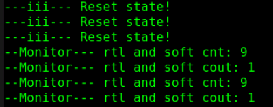

機能特性
ACC サブルーチンが主に実行する機能は次のとおりです：
- 内部データ構造から特定オブジェクトの関連情報を読み取る
- 特定オブジェクトの関連情報を内部データ構造に書き込む
ACC サブルーチンが操作できるオブジェクトの型は次のとおりです：
- モジュールインスタンス、モジュールポート、モジュールの端点間パス、およびモジュール間のパス
- トップレベルモジュール
- プリミティブインスタンスとプリミティブポート
- wire、reg、parameter、integer、time、real などの変数型
- タイミングチェック
- 名前付きイベント
ACC サブルーチンの主な特徴は次のとおりです：
- すべて acc_ をプレフィックスとする
- 最初に必ず acc_initialize() を呼び出して環境を初期化する
- 終了時には必ず acc_close() を呼び出す
- ACC ライブラリの関数を使用する場合は、ヘッダーファイル acc_user.h をインクルードする必要がある
- ハンドルの概念を使用してオブジェクトにアクセスする。ハンドルは、設計内の特定のオブジェクトを指す事前定義されたデータ型である。ハンドルを取得すると、オブジェクトのすべての情報を取得できる。これは C 言語のファイルハンドルの概念に似ている。ハンドルはキーワード handle で宣言する。
ACC サブルーチンの主な種類は次のとおりです：
- ハンドルサブルーチン（handle）：ハンドルを設計内のオブジェクトに返す。常に acc_handle_ をプレフィックスとする。
- 後続サブルーチン（next）：ハンドルを設計内の特定のオブジェクト集合における次のオブジェクトに返す。常に acc_next_ をプレフィックスとし、参照するオブジェクトを引数とする。
- 値変化リンクサブルーチン（VCL、Value Change Link）：監視対象のオブジェクトの値変化を監視するオブジェクトリストに対して、オブジェクトの追加と削除を行うことができる。常に acc_vcl_ をプレフィックスとし、戻り値はない。
- 取得サブルーチン（fetch）：階層パスなどの属性情報を抽出できる。常に acc_fetch_ をプレフィックスとする。
- その他サブルーチン（miscellaneous）：アクセスサブルーチンに関連するさまざまな操作を実行するために使用される。例えば acc_initialize() と acc_close() はどちらもその他サブルーチンに属する。
- 変更サブルーチン（modify）：内部データ構造を変更できる。
完全な ACC サブルーチンとその簡単な使用法の説明は次の節を参照『8.5 ACC サブルーチン一覧』。
ACC サブルーチンの例
以下では一部の ACC サブルーチンの使用例のみを示し、ACC サブルーチンを使用して Verilog システムタスクを設計する基本的な流れを主に説明する。
設計要件
今回はカウンタ監視を行うシステムタスクを設計する。
このシステムタスクは、一方では Verilog 内のカウンタの値を監視し、もう一方では Verilog 内のカウンタクロックを検出するとソフトウェアでもカウントを行い、ソフトウェアとハードウェアのカウント値を比較して、ハードウェアロジックの正しさを検証する。また、カウンタが特定の値までカウントしたときには、いくつかの信号変数の値を出力する。
この設計思想は、PLI インターフェースがよく使用されるシナリオでもある。ソフトウェアである論理機能を実装し、これを CModel と呼ぶ。そしてハードウェアも同じ論理機能を Verilog で実装する。PLI インターフェースプログラムを通じて、ソフトウェアとハードウェアのプログラムを同時に実行し、結果を比較することで、ハードウェアロジック設計の正しさを検証できる。
設計分析
PLI インターフェース部分では、値変化リンクサブルーチンを使用してクロックを監視する。クロックの立ち上がりエッジが来ると、ソフトウェア関数を呼び出してソフトウェアでカウントし、ソフトウェアとハードウェアのカウント値を比較する。
ソフトウェア設計
ソフトウェア設計のコードは以下のとおりである。詳細はコメントで説明しており、ファイル monitor_gyc.c に保存する。
例
handle hand_rstn, hand_clk, hand_cnt, hand_cout ;
int cnt_soft = 0 ; //ソフトウェアカウンタの値
int cout_soft = 0 ; //ソフトウェアカウンタのオーバーフロービット
//ソフトウェアカウント・比較関数
void act_monitor(){
p_acc_value value ; //ACC で定義された構造体変数を宣言
//Verilog 内の信号変数の値を読み取る。文字列型
char *rstn_rtl_str = acc_fetch_value(hand_rstn, "%d", value);
char *clk_rtl_str = acc_fetch_value(hand_clk, "%d", value);
char *cnt_rtl_str = acc_fetch_value(hand_cnt, "%d", value);
char *cout_rtl_str = acc_fetch_value(hand_cout, "%d", value);
//文字列を整数に変換
int rstn_rtl = atoi(rstn_rtl_str) ;
int clk_rtl = atoi(clk_rtl_str) ;
int cnt_rtl = atoi(cnt_rtl_str) ;
int cout_rtl = atoi(cout_rtl_str) ;
//ソフトウェアカウンタ
//リセット
if (!rstn_rtl) {
cnt_soft = 0 ;
cout_soft = 0 ;
io_printf("---iii--- Reset state! \n");
}
//正常動作
else if (rstn_rtl && clk_rtl) {
if (cnt_soft == 9) {
cnt_soft = 0 ; //10個カウント
}
else {
cnt_soft = cnt_soft + 1 ; //カウント
}
}
cout_soft = cnt_soft == 9 ? 1 : 0 ; //キャリー
//クロックが Low の期間にソフトウェアとハードウェアのカウントを比較する。このときは比較的安全なタイミングである
if (!clk_rtl && rstn_rtl) {
if ((cnt_soft != cnt_rtl) || (cout_soft != cout_rtl)) {
io_printf("--Err--- rtl cnt: %d, and soft cnt: %d\n", cnt_rtl, cnt_soft);
io_printf("--Err--- rtl cout: %d, and soft cout: %d\n", cout_rtl, cout_soft);
}
//ソフトウェアとハードウェアのカウント比較にエラーがなければ、カウント完了時の信号の状態値を1回出力する
else if (cnt_soft == 9) {
io_printf("--Monitor--- rtl and soft cnt: %d\n", cnt_soft);
io_printf("--Monitor--- rtl and soft cout: %d\n", cout_soft);
}
}
}
//PLI インターフェース、クロック変化を監視
void my_monitor() {
acc_initialize(); //必ず初期化する
//システムタスク my_monitor の最初のパラメータの handle 変数を取得
hand_rstn = acc_handle_tfarg(1);
hand_clk = acc_handle_tfarg(2);
hand_cnt = acc_handle_tfarg(3);
hand_cout = acc_handle_tfarg(4);
//"#define VCL_VERILOG_LOGIC 2" in acc_user.h
//Indicates the VCL callback mechanism shall report
//hand_clk が変化すると、act_monitor 関数を呼び出す
acc_vcl_add(hand_clk, act_monitor, null, vcl_verilog_logic);
acc_close(); //タスクを終了
}
ハードウェア設計
10 進カウンタの Verilog 記述は以下のとおりである。ファイル counter10.v に保存する。
例
input rstn,
input clk,
output [3:0] cnt,
output cout);
reg [3:0] cnt_temp ;
always@(posedge clk or negedge rstn) begin
if (! rstn) begin
cnt_temp <= 4'b0 ;
end
else if (cnt_temp==4'd9) begin
cnt_temp <=4'b000;
end
else begin
cnt_temp <= cnt_temp + 1'b1 ;
end
end
assign cout = (cnt_temp==4'd9) ;
assign cnt = cnt_temp ;
endmodule
testbench
testbench の記述は以下のとおりである。ファイル test.v に保存する。
例
module test ;
reg rstn, clk ;
wire [3:0] cnt ;
wire cout ;
initial begin
rstn = 0 ;
clk = 0 ;
#19.8;
rstn = 1 ;
end
always #5 clk = ~clk ;
counter10 u_cnt(
.rstn (rstn),
.clk (clk),
.cnt (cnt),
.cout (cout));
initial begin
$my_monitor(test.rstn, test.clk, test.cnt, test.cout);
end
initial begin
forever begin
#100;
if ($time >= 300) $finish ;
end
end
endmodule
コンパイルとシミュレーション
Linux では以下のコマンドで monitor_gyc.c をコンパイルし、monitor_gyc.o ファイルを出力する。相対パスに注意すること。
gcc -I ${VCS_HOME}/include -c ../tb/monitor_gyc.cVCS でコンパイルするには、VCS が認識できるリンクファイルを作成する必要がある。ファイル名は pli_gyc.tab とし、内容は以下のとおりである。
$my_monitor は Verilog が呼び出すシステムタスク名である。
call=my_monitor は、ソフトウェア C プログラム内の関数 my_monitor() を呼び出すことを意味する。
acc=rw:* はシステムタスクの属性を設定することを意味する。rw は内部データの読み書きが可能であることを示す。コロンの後ろには、このシステムタスクが作用するモジュールまたは信号領域を宣言できる。":*" はすべてのモジュールに作用できることを示す。
$my_monitor call=my_monitor acc=rw:*
VCS コンパイル時に以下のパラメータ行を追加する。
-P ../tb/pli_gyc.tab
シミュレーション結果のログは以下のとおりである。
ログから、ソフトウェアとハードウェアのカウント比較が正しく、カウンタが1周期のカウントを完了したときの状態も正常であることがわかる。

クリックしてノートを共有
<p style="font-size:14px;">ノートは本記事の内容の拡張である必要があります！</p><br> <p style="font-size:12px;"><a href="../tougao.html" target="_blank">記事の投稿は、こちらをクリックしてください</a></p> <p style="font-size:14px;"><a href="./runoob-user-test-intro.html" target="_blank">登録招待コードの取得方法</a></p> <h3 class="text-muted"><i class="fa fa-info-circle" aria-hidden="true"></i> ノートを共有する前に<a href=".." class="runoob-pop">ログイン</a>が必要です！</h3> <p><a href="./runoob-user-test-intro.html" target="_blank">登録招待コードの取得方法</a></p>